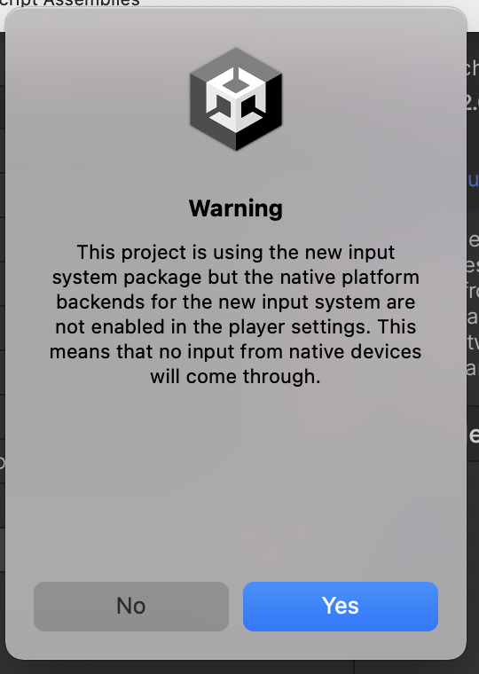
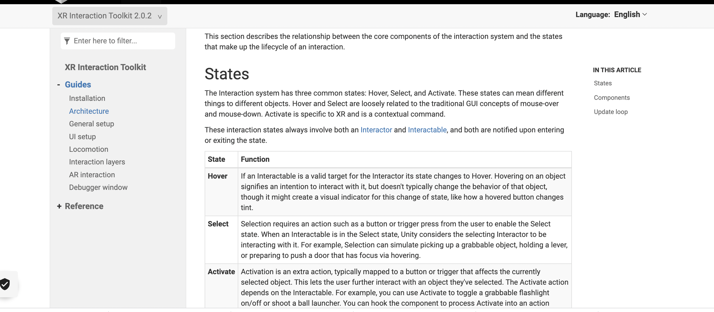

The HCI lab weeks lasted for a total of 8 days. Every working day during the Lab Weeks, we were expected to work on a project with the assigned topic(XR/VR/AR) from 9:00 AM until 5:00 PM.
An expo is held on the last day of the lab weeks to showcase our HCI technology inspired work to the public with an intention to express our creativity, and demonstrate our learnings throughout the process.
Day 1 - discuss plan, brainstorming, design charrette, group dot voting
At the beginning of the discussion, members were fond of the idea of horror game creation. We believed that VR technology can be effective in evoking a sense of horror, due to its immersive nature. There had been several iterations as the discussion continued.
The first version was a haunted house/psychiatric hospital with zombies/patients, player will have to make different options that lead to escaping away from them. The theme of the creation is supposed to reveal the social problems related to social media, such as body dysmorphia, fake news, terrorist attack and online bullying. Later on, the idea was simplified down to a simple single psychiatric hospital/classroom scene where several kids would be shown struggle with different symptoms (related to social media), and players can click further into the characters to understand their background stories. However, this idea still seemed to be too complicated for a group of Unity beginners, especially when we did not understand what was possible to manage and what was not possible from a technical aspect.
Design Charette: In order to continue and diversify our iteration for more possibilities, our group held a creative session using design charette method , where each person create a few ideas on paper and then switch their paper to the next person. A variety of interesting ideas arised during the process. Some of my personal favourites were: rat crawling through trash and pollution to find its way, a walk through virtual tour showing what human trafficking/ war could look and feel like. I felt like this process was meaningful in the sense that by browsing through different ideas, it helped me understand the usage of VR technology that resonated with me on a personally level, which could be a pointer for the type of VR projects that I would be interested to take on in future.
By the end of the session, our group used dot voting to decide on the ideas we find executable and interesting on Miro board. A visual trip became the winning idea agreed by the majority.
Day 2 - learn about interaction & VR set up & teleporting, browsing assets
Morning self learning for vr controller set up, teleportation:
The first part of creating a visual trip is a VR gaming environment. And that would require knowing how player can go through their journey inside the environment, so in the morning,
I watched a series of beginner VR tutorials by Fist Full of Shrimp in regards to VR interactable object(ray and direct interactors), and teleportation.
After building a testing area following exactly as the tutorial material, I attempted to created a simple scene in order to practice on the two sections that I have learnt. To keep things personally interesting, the lands were made using a low poly landscape asset based on my recent favourite series, Game of Thrones. The lands consists of 3 teleportation areas and anchors that teleports player from one to another. Throughout the process, I discovered Mac is not compatible with Oculus in regards to the system and hardware spec. This was a pity because it means that I will not be able to test out if my creations work with my Oculus at home, nor was I able to transfer the files into a large computer in the venue to test it out. We also weren’t able to borrow the main computers or headsets because other groups has occupied them early. Our group was in face of a dilemma where we wanted to create an immersive visual experience but with the hardware available, we might only be able to present them on flat screens like mobile phones or Ipads. At this point, only one of our member could run the environment in his android laptop and owns an oculus headset at home, so he took up the responsibility of building the VR setup as well as XR controllers.
By 4pm, I and team members found some ready made template(better rendition) discover assets that could help us create bug’s life scenario, these assets include insects, butterflies and vegetations. We downloaded these assets from Unity and some sites discovered by team members.
Day 3 - VR interaction toolkit learnings, Facing obstacles in testing teleportation due to hardware limitations, changing directions
Day 3 was the day where my learnings about two ways of teleporting in Unity deepened.
I learnt that teleportation in Unity can be done with laser shooter, or anchor and anchor point. The first on is presented by user shooting a beam of laser light onto the location one wants to reach, while the second one works like a portal/ door that one can walk in and out directly to reach the targeted destination. For VR interactions to work, a VR interaction toolkit must be added to Unity.
As I attempt to re-download the package, I, along with other members realised that in the VR learning process, one of the biggest obstacle is how quick and inconsistent the interface changes throughout short periods of time. Some of the tutorials we follow has barely pasted 1 year on Youtube, however, they are no longer relevant or some of the packages required for completing the project has been changed or disabled. The steps are no longer applicable if we are using an updated version of Unity.
At times, we also have to look for Git direct download links of packages from Unity community. As other members were busy with figuring out how to connect Oculus into the main computer (we finally got our own), I thought about what sort of spot I would like to present inside the virtual, and a magical tunnel where one is able to see many fantasy themed clips came into mind. I kept the idea in mind and looked up for tutorials on how to project a video on a 3D object surface by the end of the day.
Day 4 - Compromising ideas: from eccentric trippy tunnel to sphere world
On day 4, I started finding free video render textures online and creating a 3D tunnel following a tutorial water shadows doesn’t appear due to video render because I thought it was an amusing effect. However, as I reconfirm our Expo concept with group members, I realised that there is a difference in the “visual trip” in my understanding and others. I learnt that what the group concept of a VR world meant that is more lenient to nature objects like farm, and nature, while I understood the world leaning towards magic and eccentric elements, focusing more on diversity and expression with less cohesiveness.
After the learning process, I started applying what I learnt from the tutorial and experimenting with another idea of a “sphere world”. Where players can see and gaze at movements of different textured bubbles, like magical crystal balls. I learnt how to apply video player and Raw Image as texture onto a 3D object by defining its settings and output destinations. I’ve also learnt about the use of directional light/spotlight and adjusting main camera to see the outcome. By the end of the day, I created a scenario featuring an orbiting fantasy/organic themed crystal ball with background screen and mountainous landscape as decoration.
I believe this adjustment has helped the scene blend in with the nature theme of our VR world, while also retaining the magical/trippy aesthetic. Though not implemented, I’ve also learnt the basic use of UI buttons and 3D texts. The only problem with today’s learning was that I had a hard time projecting the shadow of the crystal ball on a cylinder platform, which later I learnt from tutors that its impossible at this moment to apply video player as an object’s texture, which left it looking a little unnatural in my point of view.
Day 5 - First Encounter with Mixamo, learning Animation components & C# Script
On day 5, my group members and I agreed that I will look further into animation as others were looking into the Oculus connection issues. I discovered a series of wonderful and easy to understand tutorial by IHeartGameDev. Firstly, I learnt what Mixamo is as a platform, as well as how to importing Free Characters and Animations from it, from choosing characters, adjusting export settings and formats, as well as interpolation and eventually, importing character into Unity and understanding the different components inside a character asset, such as animation, skin and mod.
Secondly, I learnt about the operation of Animator in Unity. This included understanding the functionalities of different components of the Animator controller, different animation states, what root motion, updated mode and culling mode are respectively. Lastly and also the most rewarding part was that I learnt to set conditionals for animation transitions using boolean statements in C#. This include understanding and setting animator parameters and setting up respective transitions, and adding conditions with a script using C# and connect animator to the script.
Using the X-bot model, I learnt to match keyboard command inputs as a trigger to switch the character’s movements from walking, idle and running mode, as well as setting the transition duration and offset. I was proud of my learning today because it was fun to see the outcome after the hard work during the process and excited about the possibility of applying the knowledge into our group’s VR world.
Day 6 - Deepening learnings and applying Animation Transitions Using Animator & C# Script
On the previous day, I managed to make the x-bot animates and transit following a tutorial. Today, it is the time for me to apply what I’ve learnt onto other assets. What our group have chosen is this magic mushroom animation package. I managed to wire the transitions in the animator interface, setting a series of boolean conditional, and finally, connect the animations with corresponding keyboard triggers onto the keyboard to create different transitions. The character begins in a idle animated state.
Upon pressing “d”, the mushrooms will perform a dance-like movement. When “shift” is also pressed at the same time, the mushroom start spinning and shoot beams of light balls. I have also experimented with blend tree, a feature that blends two animations together as a form of transition. However, we stopped experimenting with this as it is a more advanced function and less relevant to what we intend to achieve for this project.
Once this animation transition is ready, I began experimenting with the mushroom assets, while imagining about the scenario that our group would love to create for this project. I had an idea of duplicating the mushrooms and make them rise and fall along with the Y axis in a rhythmic pattern as an interaction is triggered, along with background music, so that it would appear to the player like a dance performance. Although eventually the idea was not implemented, through out this process, I learnt to create my own animation by adjusting the transformation values and setting event keyframes.
Day 7 - Decorating the Mushroom Island & Enriched Interactions


On this day, my mission was to enrich the props and aesthetic of the scenario that compliments with the animation transitions that I have created, in a creative manner that is cohesive with the ambience of rest of the virtual game world. In my previous day, I have created 3 identical mushroom. Since the moment looks quite monotonic, and I did not figured out how to successfully blend the rise and fall animation with the jumping animation, I must thought of an effective solution within a limited time frame. I first looked at the remaining assets in the magic mushroom package, and downloaded another low poly farm asset that features farm and nature related elements that would fit with our project’s theme. Then, I started experimenting with the colors, texture and sizes of different mushrooms and created a “mushroom family” clustered naturally with different types of mushrooms. This attempt enhanced the visual richness and dynamic movements of the mushrooms as a group, like the raw mushroom clusters in real nature.
Then I modified the script by adding more animation transitions in animator and animation controller script using new variables and boolean conditionals, which I have become familiarised at this point. By pressing “w” and “s”, the mushroom walk forward and backwards respectively. Since the scale of each mushrooms are different, they seemed to be walking in different speed rates which made the movements to look somewhat more natural, without further use of animation offset adjustments. In the afternoon, I focused my effort on building the surrounding props and background of the mushroom cluster. It was a very fun and satisfying process and eventually, a scene that contains a small landscape with a lake in the centre, accompanied by reefs, flowers and farm house trucks full of fruits was created. I also had to create a sign that explains to player about the mushrooms using text mesh pro. Which led to learnings about font asset creator so that the font style aligns with creations of other member. Generally speaking, this was the day I saw my part of the creation come into fruition and while facing limitations, I was pleased at the fact that the challenges were overcome on the spot without interrupting the general progress of the team.
With the rest of the remaining time, I kept looking up and followed tutorials with the purpose of figuring out how Keyboard triggers can be connected to VR button that users can trigger by themselves. I continued to experiment with the possibility of animation including learning about ways to connect the animation to players’ Oculus handle by reviewing the documentation pages and setting pages VR interaction toolkit again with the hope to understand the configuration steps.
Day 8 - Unsuccessful VR buttons, a change of perspective, Unity imported packages corruption
Day 8 is the last day we edit on our project. I continued learning from tutorials in regard to VR button creation. This is because my original intention was to get user to control and interact with movements of the mushrooms by themselves. However, since I created my part on a Mac computer instead of the main computer, there was very limited time for us to figure out how VR settings was configured by other members who are responsible for ensuring the smooth running of the game environment. Due to hardware issues and time limitations, it would have been challenging to examine the VR configuration in the main computer when other members were busy tackling with the on-going connection problem with Oculus.
In face of this challenge, the idea of creating a VR button inside the game environment arises. With the spent the rest of the time researching on tutorials. While the tutorial has deepened my understanding about the concept of box collider, rigid body and configurable joints and the functionality of their respective variables, and the button’s trigger in the script, I did not managed to get the button to respond as intended despite having checked multiple times to make sure my script was in place and I did not miss any steps or input variables. Eventually, a team member helped me find another tutorial that seemed to be more simple and we both followed the tutorials together. At this point, it felt disappointing because neither I or the other teammate, or even school mates from other group whom I knew was following the same tutorial managed to get it to work properly.
In the afternoon, although the issue has not been solved, we have to combine the files and scenes together for the final outcome. As I uploaded my 2 parts and team members tried to combine the packages together, the whole file became corrupted to a point where the VR controller and Oculus aren’t functioning anymore due to differences in settings. Fortunately, we had a back up version of the project and at the end, only the mushroom scene was successfully imported into the main computer Unity, but we already felt very fortunate about it. We even discovered that the keyboard interactions still functions properly, thought wasn’t through Oculus’s controllers. However, we thought this could become a fun and surprise elements for players when members control the interactions from keyboard to shock players with a sudden random event, as the mushroom leaving their own habitat and patrolling towards player.
Product, Reactions & Value proposition:
Our final presentation is an immersive, interactive, VR perspective switching visual trip inspired by the movie Bug’s Life. The project is completed solely with Unity. Players will wear Oculus headset and controllers to explore an unknown landscape inspired by nature and fantasy theme. With the use of colourful low poly nature, vegetation and fantasy asset elements, There are two parts to the landscape: one is a normal scaled nature environment, where instructions and examples were presented to help users understand how to navigate in the environment; and the other one is a fantasy/nature themed island where everything is enlarged to a point where user feels small, as if they are experiencing from the perspective of an ant. The two landscapes are connected through a teleport portal where player can switch between the two worlds. By operating with the handle and body movements, players can move around, change walking directions, pick up and throwing objects like rocks, nuts as they explore. On the ant perspective landscape there are three sight seeing spots for players to explore: the food area where users can pick up objects and examine the ants that are guarding them; the spider area where a gigantic spider will continuously follow player if it spots his/her existence from a certain parameter; and the mushroom area where a strange mushroom cluster dances, spins to a medieval version of Shakira’s Hips Don’t Lie music, and patrol back and forth on the island from time to time to surprise the player at a random interval. (this interaction is controlled by team members from a keyboard for the shock/surprise value)
In terms of reactions, participants in general demonstrate a positive reaction and fair amount of curiosity with the experience. Among them several demonstrated a range of emotions of surprise and delight when they were able to pick up/interact with objects and sightseeing in a large scaled virtual world. Several participants, especially those who are not used to VR appliances, experienced motion sickness and had to stop continuing the game. On the other hand, many participants experience a shock/ surprised feeling by the unexpected in-game event elements such as the patrolling mushroom cluster, as well as the realistic, detailed texture when they interact closely and got chased after by spider. One participant even started discussing with us her real life experience with spiders.
In terms of the value and relevance of the product for players, I believe that our project offers a fun, carefree experience where the mundane can be turned into magical adventures as players perspective changes from normal sized human into a tiny bug. In a result-oriented and capitalistic society, the framework of the collective mindset can often become very monotonic and rigid, due to standards of our society. We are always busy getting from A to B, to rush to a conclusion. In our project, there are no preset goals that limits the way how players want to experience the virtual world, which returns players into a child-like state, as they interact with everyday objects from a fresh perspective full of adventures. We believe that this project can be valuable in that sense that it encourage players to switch their perspective of experiencing life and to approach any events, and derive their own meaning from the experience.
Reflection on the overall Lab Week Experience and Outcome
Looking back at the final product, I was content in the sense that despite limited by a tight time constraint, and everyone in our group being a total beginner of Unity and VR, our team managed to fulfill what we set out to achieve: creating an immersive visual tripping experience that leaves the audience in awe. I would describe the quality of the product as a 8.5/10.
Looking back at the process, I felt like I have contributed equally with other teammates, who were just as passionate to contribute to this process. Due to hardware and time constraints, I felt like I was fortunate in the sense that I had the opportunity to be responsible to for learning about the actual creation process in Unity itself, while some members who was responsible for the game environment spent a large amount of time tackling the issue of connecting Oculus into the main computer, which was often less fun with frustrations. Without their effort, none of the creations would have been seen on Expo day and it made me feel a lot of gratitude towards my team members.
Insights for Future References
In terms of my part of contribution in the group’s process: Firstly, I would say that there were a few moments where I felt confusion about the parts that myself and others are responsible for. For example, once my previous task was finished, I was not sure what next new tasks to do which does not overlap with others’ tasks. On the other hand, as I was focused on my tasks, I became less focused on what progress others were making. In future, I think a list with clear task division, as well as internal deadlines might help us get a better update on each others contributions and understanding of the way our project progresses.
Secondly, I felt like better time and resource allocation is necessary. At the beginning of the lab week, I spent 2 days trying to learn about inserting teleportation, just to realise that I wasn’t able to test my outcome with Oculus on a Mac environment, and we also didn’t have our main computer at that time. Eventually, members found a pre-made teleportation asset to insert into the game. While I would not say the Unity knowledge that I learnt from the process has gone wasted, it did feel like the effort was not translated into tangible contribution. In future, I feel like when approaching and experimenting as a team, it is important to assess the existing resources that we have and decide on how much time we want to allocate on certain tasks(and when to abandon that task when it took up too much of our time).
Lastly, during the process, I felt like schedule for the sub-tasks to execute on that day was in general unclear. In future, I felt like I could achieved more by creating a clear checklist with concrete goals to create a brief structure on how I would spend my time to make progress throughout the day.
Personal Learnings
Firstly, learn by doing is a more efficient approach when it comes to STEM learning: it is not necessary to know everything before you start building something. For example, if one is trying to learn VR Unity, they can try to focus on building a teleportation landscape. Throughout the process, and with a good tutorial, one will learn how the VR rigs and controllers should be connected and what values should be assigned, and eventually the small dots connect with each other and become one’s own learning.
Secondly, focus on the goal one/ team is trying to achieve in a project and don’t be afraid to come up with creative and simple solutions and give up at the right time. If I tried a solution it didn’t work out, I should switch on another one immediately instead of dwelling and drilling into it. Sometimes the alternative solution could even be better due to constraints. For example, the floating magic orb I created better fit with the group’s theme of a fantasy/nature world is not only simpler, but a better solution than the original idea of a tunnel.
Lastly, it is important to start small to know what is the absolute bare minimum you can do and cannot do in a new territory, and gradually add on to it, instead of setting the goal too high and then feeling by not achieving it. For example, at the early phase, we set out to build an escape game with little to no knowledge of Unity. Once we loosen up the definition, there were more possibilities for us to experiment, to fail and celebrate small successes along the way without feeling overly stressed.